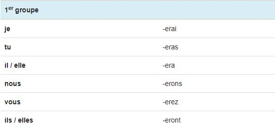
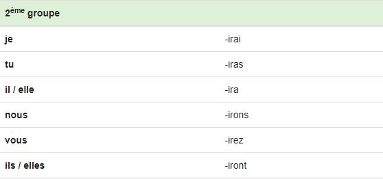
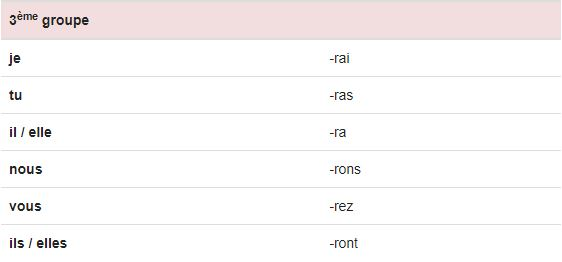
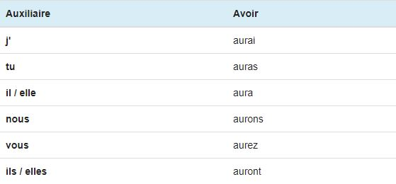
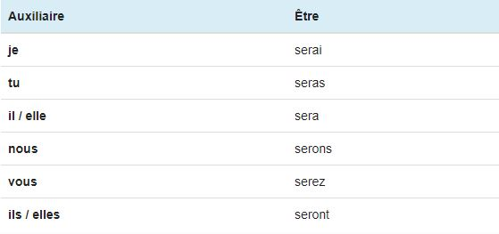

Le Futur
Utilisation
Le futur simple s'emploie principalement pour exprimer une action à venir. Cette action se déroulera plus tard, elle n'a pas encore eu lieu au moment où nous nous exprimons.
Terminaisons
Au futur simple de l'indicatif, tous les verbes prennent les mêmes six terminaisons: -rai, -ras, -ra, -rons, -rez, -ront. Mais la dernière lettre avant la terminaison varie.
Voici donc, plus précisement, les terminaisons des 3 groupes de conjugaisons:
- Les verbes du 1er groupe rajoutent avant les terminaisons un -e 
- Les verbes du 2ème groupe rajoutent un -i 
- Les verbes du 3ème groupe ne rajoute rien 
Remarques
Au futur simple les verbes des 1er et 2ème groupes conservent généralement l'infinitif en entier: "chanter => je chanterai", "finir => je finirai".
Les verbes du 3ème groupe conservent parfois leur radical mais beaucoup sont irréguliers: "vouloir => je voudrai", "tenir = je tiendrai".
Auxiliaires
Voici la conjugaison des deux auxiliaires avoir et être au futur simple de l'indicatif. Ces deux auxiliaires au futur simple permettent notamment de construire le futur antérieur de l'indicatif.
 